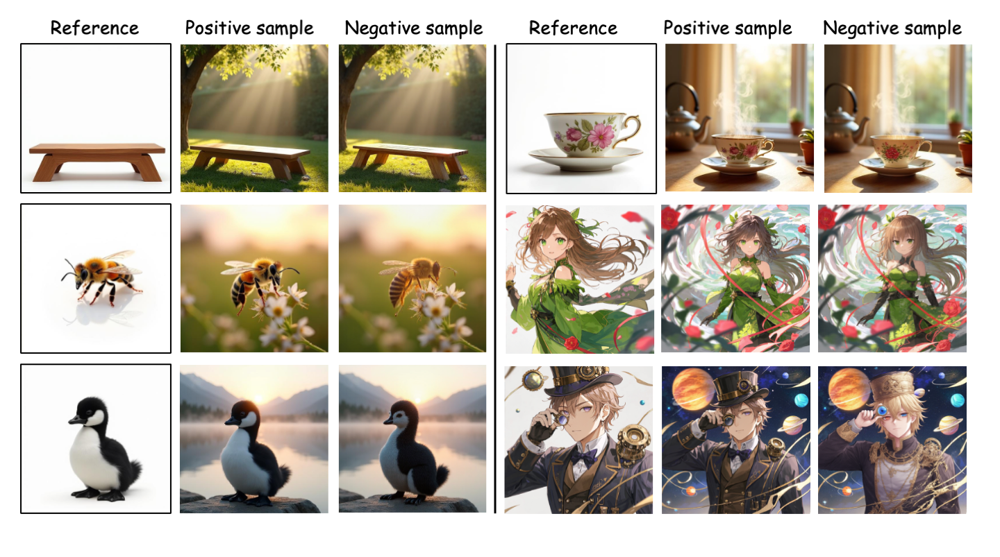

<!-- Meta tags for social media banners, these should be filled in appropriatly as they are your "business card" -->
<!-- Replace the content tag with appropriate information -->

<!-- Path to banner image, should be in the path listed below. Optimal dimenssions are 1200X630-->

<!-- Path to banner image, should be in the path listed below. Optimal dimenssions are 1200X600-->

<!-- Keywords for your paper to be indexed by-->

<link rel="icon" type="image/x-icon" href="static/images/logo.png" />
<link
  href="https://fonts.googleapis.com/css?family=Google+Sans|Noto+Sans|Castoro"
  rel="stylesheet"
/>

<link rel="stylesheet" href="static/css/bulma.min.css" />
<link rel="stylesheet" href="static/css/bulma-carousel.min.css" />
<link rel="stylesheet" href="static/css/bulma-slider.min.css" />
<link rel="stylesheet" href="static/css/fontawesome.all.min.css" />
<link
  rel="stylesheet"
  href="https://cdn.jsdelivr.net/gh/jpswalsh/academicons@1/css/academicons.min.css"
/>
<link rel="stylesheet" href="static/css/index.css" />

<script src="https://ajax.googleapis.com/ajax/libs/jquery/3.5.1/jquery.min.js"></script>
<script src="https://documentcloud.adobe.com/view-sdk/main.js"></script>
<script defer src="static/js/fontawesome.all.min.js"></script>
<script src="static/js/bulma-carousel.min.js"></script>
<script src="static/js/bulma-slider.min.js"></script>
<script src="static/js/index.js"></script>

<section class="hero">
  <div class="hero-body">
    <div class="container is-max-desktop">
      <div class="columns is-centered">
        <div class="column has-text-centered">
          <div class="is-flex is-align-items-center is-justify-content-center">
            <h1 class="title is-1 publication-title">
              <span class="is-flex is-align-items-center">
                
                FocusDPO: Dynamic Preference Opti-
              </span>
              <span> mization for Multi-Subject Personalized Image Generation via Adaptive Focus</span>
            </h1>
          </div>
          <div class="is-size-5 publication-authors">
            <!-- Authors -->
            <span class="author-block">
              <a href="https://scholar.google.com/citations?user=zWQf0XcAAAAJ&hl=en" target="_blank">Qiaoqiao Jin</a><sup>1*</sup>,
            </span>
            <span class="author-block">
              <a href="https://scholar.google.com/citations?hl=en&user=tql_Zc4AAAAJ" target="_blank">Siming Fu</a><sup>1*†</sup>,
            </span>
            <span class="author-block">Dong She<sup>1*</sup>,</span>
            <span class="author-block">Weinan Jia<sup>1,3</sup>,</span>
            <span class="author-block">Hualiang Wang<sup>1,2</sup>,</span>
            <span class="author-block">Mu Liu<sup>1</sup>,</span>
            <span class="author-block">Jidong Jiang<sup>1‡</sup></span>
          </div>

          <div class="is-size-5 publication-authors">
            <!-- Institutions -->
            <span class="author-block">
              <sup>1</sup> ByteDance <br />
              <sup>2</sup> The Hong Kong University of Science and Technology <br />
              <sup>3</sup> University of Science and Technology of China
            </span>
            <span class="eql-cntrb">
              <small>
                <br />
                <sup>*</sup> Equal Contribution &nbsp;&nbsp;&nbsp;
                <sup>†</sup> Project Lead &nbsp;&nbsp;&nbsp;
                <sup>‡</sup> Corresponding Author
              </small>
            </span>
          </div>

          <div class="column has-text-centered">
            <div class="publication-links">
              <!-- Arxiv PDF link -->
              <span class="link-block">
                <a
                  href="https://arxiv.org/abs/2509.01181"
                  target="_blank"
                  class="external-link button is-normal is-rounded is-dark"
                >
                  <span class="icon">
                    <i class="fas fa-file-pdf"></i>
                  </span>
                  <span>Paper</span>
                </a>
              </span>

              <!-- Github link -->
              <span class="link-block">
                <a
                  href="https://github.com/bytedance-fanqie-ai/FocusDPO"
                  target="_blank"
                  class="external-link button is-normal is-rounded is-dark"
                >
                  <span class="icon">
                    <i class="fab fa-github"></i>
                  </span>
                  <span>Code</span>
                </a>
              </span>
            </div>
          </div>
        </div>
      </div>
    </div>
  </div>
</section>

<section class="hero is-small">
  <div class="hero-body" style="width: 60%; margin: 0 auto;">
    <div class="carousel-teaser-container">
      <div class="carousel-teaser" id="carousel">
        <!-- loop images -->
        
        
        
        
        
        
        

        <!-- 再复制一遍 -->
        
        
        
        
        
        
        
      </div>
    </div>

    <div class="teaser_text" style="color:#070707; text-align: center; margin-top: 20px;">
      <p>
        We introduce <b>FocusDPO</b>, a post-training framework that adaptively identifies focus regions based on dynamic semantic correspondence and supervision image complexity. FocusDPO demonstrates capabilities in single-subject and multi-subject driven generation tasks.
      </p>
    </div>
  </div>
</section>

<style>
.carousel-teaser-container {
  overflow: hidden;
  width: 100%;
}

.carousel-teaser {
  display: flex;
  width: max-content;
  animation: scrollLoop 30s linear infinite;
}

.carousel-teaser img {
  height: 480px;
  margin-right: 20px;
  border-radius: 8px;
  cursor: pointer; /* 鼠标悬停显示手指 */
  transition: transform 0.3s ease;
}

/* 点击放大效果，但保持在原位置 */
.carousel-teaser img.active {
  transform: scale(1.1);
  z-index: 10;
  position: relative;
}

@keyframes scrollLoop {
  from {
    transform: translateX(0);
  }
  to {
    transform: translateX(-50%);
  }
}
</style>

<script>
const carousel = document.getElementById('carousel');
const images = carousel.querySelectorAll('img');

images.forEach(img => {
  img.addEventListener('click', () => {
    const isActive = img.classList.contains('active');

    // 清除所有 active
    images.forEach(i => i.classList.remove('active'));

    if (!isActive) {
      // 点击放大并暂停动画
      img.classList.add('active');
      carousel.style.animationPlayState = 'paused';
    } else {
      // 再次点击恢复动画
      carousel.style.animationPlayState = 'running';
    }
  });
});
</script>


<!-- End image video -->

<!-- Paper abstract -->
<section class="section hero is-light">
  <div class="container is-max-desktop">
    <div class="columns is-centered has-text-centered">
      <div class="column is-four-fifths">
        <h2 class="title is-3">Abstract</h2>
        <div class="content has-text-justified">
          <p>
          Multi-subject personalized image generation aims to synthesize customized images containing multiple specified subjects without requiring test-time optimization. However, achieving fine-grained independent control over multiple subjects remains challenging due to difficulties in preserving subject fidelity and preventing cross-subject attribute leakage. We present FocusDPO, a framework that adaptively identifies focus regions based on dynamic semantic correspondence and supervision image complexity. During training, our method progressively adjusts these focal areas across noise timesteps, implementing a weighted strategy that rewards information-rich patches while penalizing regions with low prediction confidence. The framework dynamically adjusts focus allocation during the DPO process according to the semantic complexity of reference images and establishes robust correspondence mappings between generated and reference subjects. Extensive experiments demonstrate that our method substantially enhances the performance of existing pre-trained personalized generation models, achieving state-of-the-art results on both single-subject and multi-subject personalized image synthesis benchmarks. Our method effectively mitigates attribute leakage while preserving superior subject fidelity across diverse generation scenarios, advancing the frontier of controllable multi-subject image synthesis.
          </p> 
        </div>
      </div>
    </div>
  </div> 
</section> 
<!-- End paper abstract -->

<section class="hero is-small" style="margin-top:40px;">
  <div class="container is-max-desktop">
    <div class="columns is-centered has-text-centered">
      <div class="column is-four-fifths">
        <h2 class="title is-3">How does FocusDPO work?</h2>
        
        <div class="content has-text-justified">
          <p>
          FocusDPO introduce <b>spatially-aware optimization framework</b> (left) that adaptively focuses on critical regions through dynamic semantic guidance, leveraging (a) <i>Structure-Preserving Attention Field</i>, which establishes robust correspondence mappings between generated and reference subjects, and (b) <i>Detail-Preserving Complexity Estimator</i>, which provides the semantic complexity of images.
          </p> 
        </div>
      </div>
    </div>
  </div> 
</section> 

<section class="hero is-small">
  <div class="hero-body" style="width: 60%; margin: 0 auto;">
    <div class="columns is-centered has-text-centered">
      <div class="column is-four-fifths">
      <h2 class="title is-3">More Results</h2>
        <div class="carousel-teaser-container">
          <div class="carousel-teaser" id="carousel">
            <!-- loop images -->
            
            
            
            
            

            <!-- 再复制一遍 -->
            
            
            
            
            
          </div>
        </div>
        <div class="carousel-teaser-container">
          <div class="carousel-teaser" id="carousel">
            <!-- loop images -->
            
            
            
            
            

            <!-- 再复制一遍 -->
            
            
            
            
            
          </div>
        </div>
      </div>
    </div>
    </div>
  </div>
</section>


<style>
.carousel-teaser-container {
  overflow: hidden;
  width: 100%;
  margin: 20px 0;
}

.carousel-teaser {
  display: flex;
  width: max-content;
}

.carousel-teaser img {
  height: 200px;
  margin-right: 20px;
  border-radius: 8px;
}

@keyframes scrollLeft {
  from { transform: translateX(0); }
  to { transform: translateX(-50%); }
}
@keyframes scrollRight {
  from { transform: translateX(-50%); }
  to { transform: translateX(0); }
}

.carousel-teaser-container:nth-of-type(1) .carousel-teaser {
  animation: scrollLeft 45s linear infinite;
}
.carousel-teaser-container:nth-of-type(2) .carousel-teaser {
  animation: scrollRight 45s linear infinite;
}
</style>


<!-- Image carousel -->
<section class="hero is-small">
  <div class="hero-body">
    <div class="container">
      <h2 class="title is-3 has-text-centered">
        Comparison with State-of-the-Art Methods
      </h2>
      <div id="results-carousel" class="carousel results-carousel">
        <div class="item">
          <!-- Your image here -->
          
          <h2 class="subtitle has-text-centered">Qualitative comparison of single-subject and multi-subject generation with different methods on DreamBench (UNO as backbone).</h2>
        </div>
        <div class="item">
          <!-- Your image here -->
          
          <h2 class="subtitle has-text-centered">Qualitative comparison of identity preservation across different optimization methods and PatchDPO (SDXL as backbone).</h2>
        </div>
      </div>
    </div>
  </div>
  <style>
/* 控制 carousel 内所有图片宽度 */
#results-carousel .item img {
  width: 80%;        /* 图片占原始容器的 60% */
  max-width: 800px;  /* 最大宽度限制，可根据需要调整 */
  height: auto;      /* 保持纵横比 */
  display: block;    /* 去掉默认行内间距 */
  margin: 0 auto;    /* 居中显示图片 */
}
</style>
</section>
<!-- End image carousel -->


<!-- Image carousel -->
<section class="hero is-small">
  <div class="hero-body">
    <div class="container">
      <h2 class="title is-3 has-text-centered">
        Disrupted-Instance Pair Dataset (DIP)
      </h2>
      

      <div class="content has-text-justified" style="max-width:700px; margin:0 auto;">
        <p>
          We construct high-quality subject-consistent pairs with controlled subject variation, utilizing a binary prior guidance to identify regions containing subject differences. 
        </p> 
      </div>
      <div id="results-carousel" class="carousel results-carousel">
        <div class="item">
          <!-- Your image here -->
          
          <h2 class="subtitle has-text-centered">Single-subject examples from the DIP dataset across three content types: object, animal, human.</h2>
        </div>
        <div class="item">
          <!-- Your image here -->
          
          <h2 class="subtitle has-text-centered">Multi-subject examples from the DIP dataset.</h2>
        </div>
      </div>
    </div>
  </div>
  <style>
/* 控制 carousel 内所有图片宽度 */
#results-carousel .item img {
  width: 80%;        /* 图片占原始容器的 60% */
  max-width: 800px;  /* 最大宽度限制，可根据需要调整 */
  height: auto;      /* 保持纵横比 */
  display: block;    /* 去掉默认行内间距 */
  margin: 0 auto;    /* 居中显示图片 */
}
</style>
</section>
<!-- End image carousel -->


<!--BibTex citation -->
<section class="section" id="BibTeX">
  <div class="container is-max-desktop content">
    <h2 class="title">BibTeX</h2>
    <pre><code>BibTex Code Here</code></pre>
  </div>
</section>
<!--End BibTex citation -->

<footer class="footer">
  <div class="container">
    <div class="columns is-centered">
      <div class="column is-8">
        <div class="content">
          <p>
            This page was built using the
            <a
              href="https://github.com/eliahuhorwitz/Academic-project-page-template"
              target="_blank"
              >Academic Project Page Template</a
            >
            which was adopted from the <a
              href="https://nerfies.github.io"
              target="_blank"
              >Nerfies</a
            > project page. You are free to borrow the source code of this
            website, we just ask that you link back to this page in the footer.
            <br />
            This website is licensed under a
            <a
              rel="license"
              href="http://creativecommons.org/licenses/by-sa/4.0/"
              target="_blank"
              >Creative Commons Attribution-ShareAlike 4.0 International
              License</a
            >.
          </p>
        </div>
      </div>
    </div>
  </div>
</footer>

<!-- Statcounter tracking code -->

<!-- You can add a tracker to track page visits by creating an account at statcounter.com -->

<!-- End of Statcounter Code -->
